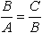

Золотым сечением называется принцип деления отрезка на две части, при этом бoльшая часть отрезка относится к меньшей части так же, как длина всего отрезка к большей его части. Наглядно это показано на рис. 1.

Золотое сечение характеризуется следующим соотношением:

Учитывая, что C = A + B в итоге получим квадратное уравнение, корнем которого будет выражение  .
.
Вернемся к ловле льва. Метод золотого сечения является разновидностью метода дихотомии, при этом область пустыни делится не на две равные части, а в пропорции золотого сечения (рис. 2).

Последовательное деление пустыни по вертикали и горизонтали продолжается до тех пор, пока оставшаяся часть по размерам не будет сопоставима с размерами клетки. Остается только накрыть полученный участок клеткой и лев окажется пойман.
На рис. 3 показаны итерации ловли льва методом золотого сечения.

Деление области на две неравные части позволяет повысить точность поиска или сократить количество итераций по сравнению с методом дихотомии.